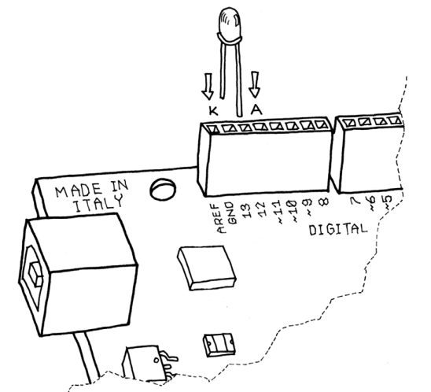
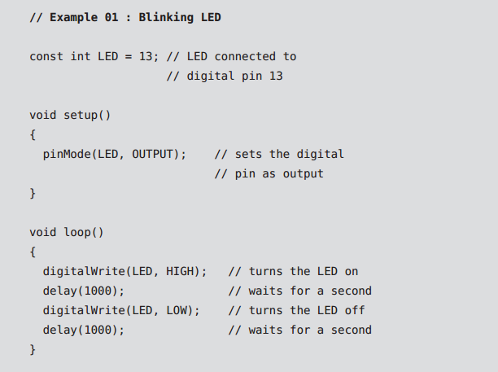

Blinking an LED
The LED blinking sketch is the first program that you should run to test whether your Arduino board is working and is configured correctly. It is also usually the very first programming exercise someone does when learning to program a microcontroller. A light-emitting diode (LED) is a small electronic component that’s a bit like a light bulb, but is more efficient and requires lower voltages to operate.
Your Arduino board comes with an LED preinstalled. It’s marked “L”. You can also add your own LED—connect it as shown in Figure. If you intend to keep the LED lit for a long period of time, you should use a resistor. K indicates the cathode (negative), or shorter lead; A indicates the anode (positive), or longer lead.
 Now that the code is in your IDE, you need to verify that it is correct. Press the “Verify” button; if everything is correct, you’ll see the message “Done compiling” appear at the bottom of the Arduino IDE. This message means that the Arduino IDE has translated your sketch into an executable program that can be run by the board, a bit like an .exe file in Windows or an .app file on a Mac. At this point, you can upload it into the board: press the Upload to I/O Board button. This will reset the board, forcing it to stop what it’s doing and listen for instructions coming from the USB port. The Arduino IDE sends the current sketch to the board, which will store it in its memory and eventually run it.
You will see a few messages appear in the black area at the bottom of the window, and just above that area, you’ll see the message “Done uploading” appear to let you know the process has completed correctly. There are two LEDs, marked RX and TX, on the board; these flash every time a byte is sent or received by the board. During the upload process, they keep flickering.